创作主题
从女性与自然的关系出发，思考个体如何在自然中重新感知身体与自我。
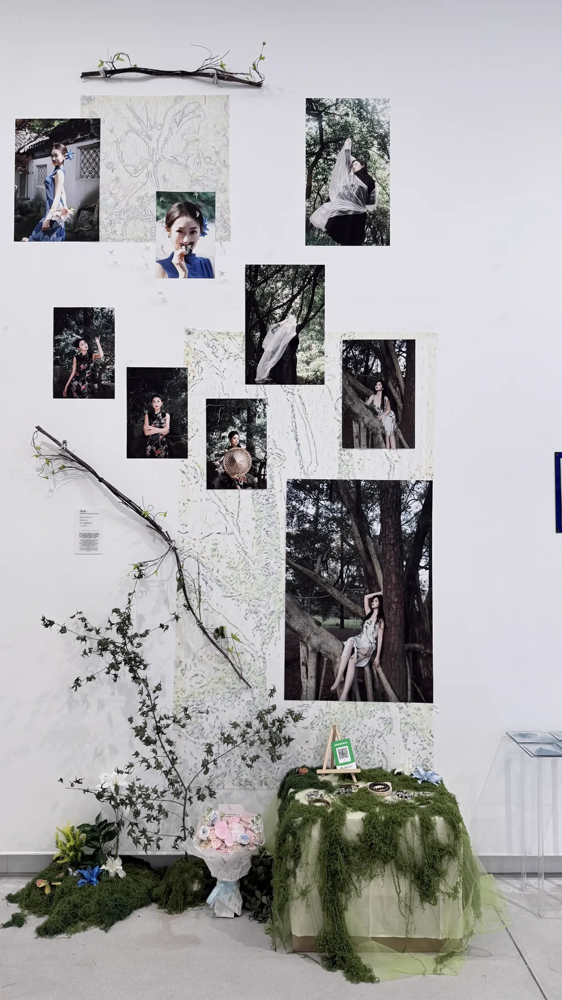
Exhibition / Photography Exhibition
Exhibition Overview
《栖·逸》是陈会凌于 2026 年创作的摄影作品，呈现于“共作界面｜影像策展实验计划”。
作品以园林与森林作为两种不同的精神空间，关注个体如何在自然之中重新感知身体，并寻找属于自己的栖居方式。
Installation View
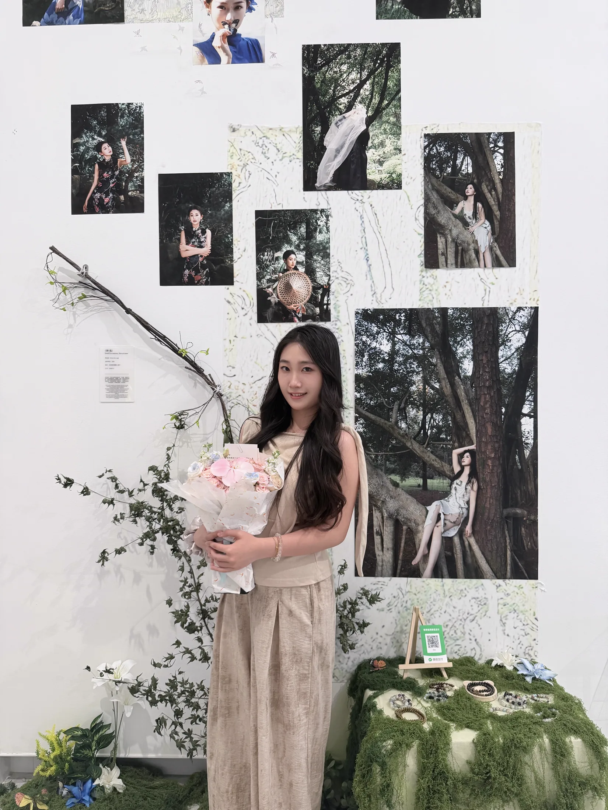
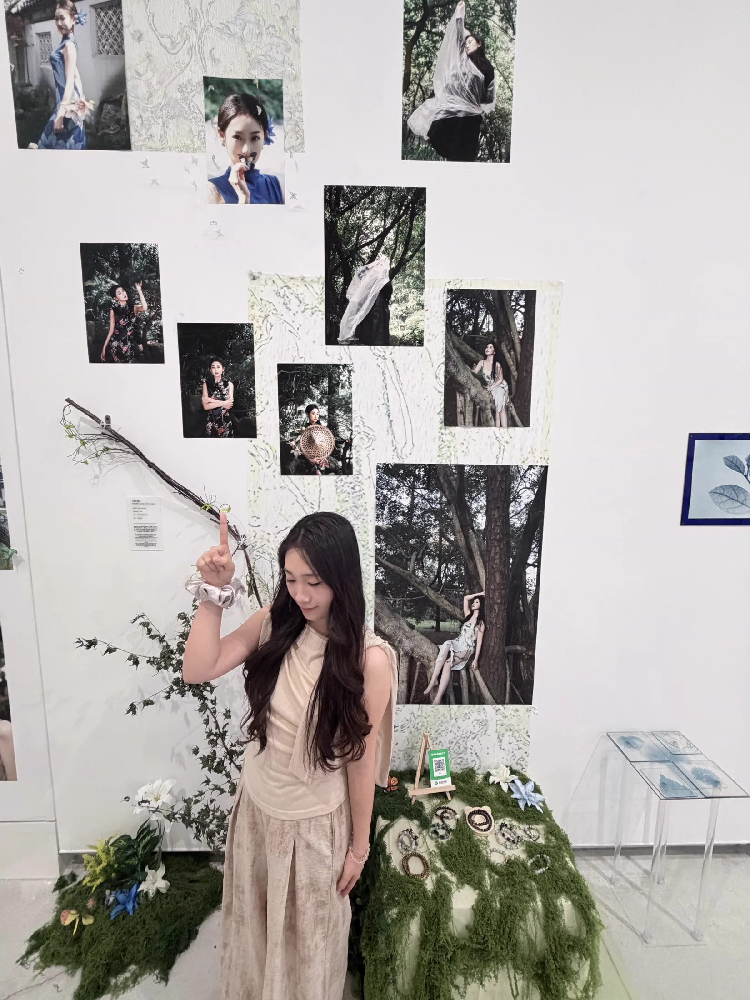
作品在展览空间中以摄影图像、自然枝叶与现场陈设共同呈现。
南京市金鹰美术馆 · 2026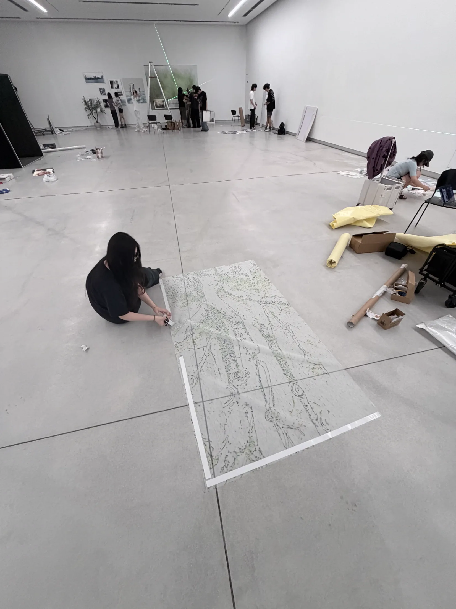
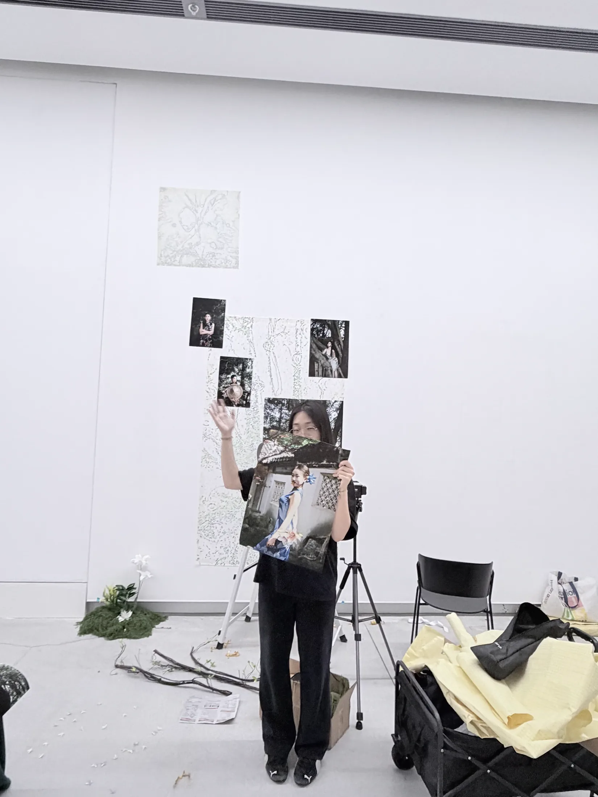
Selected Works
《栖·逸》
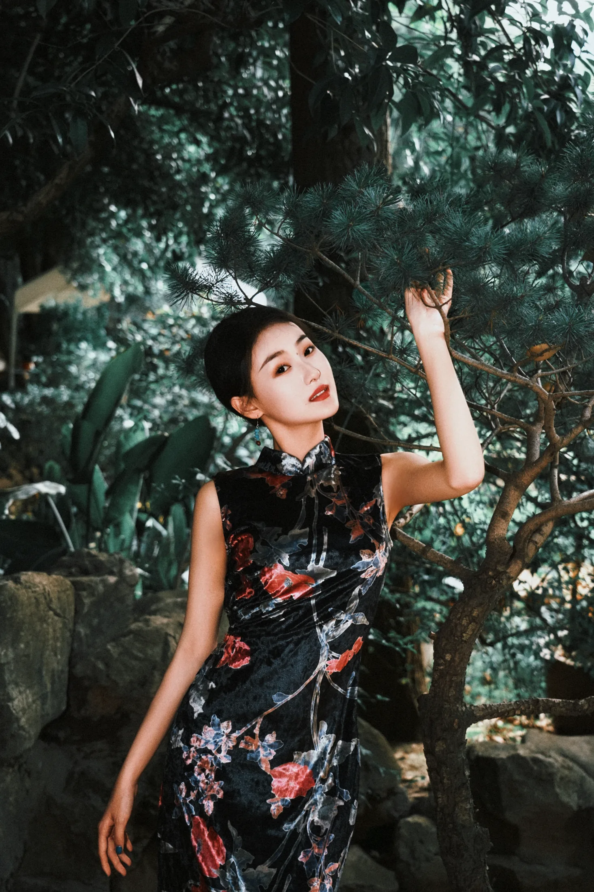
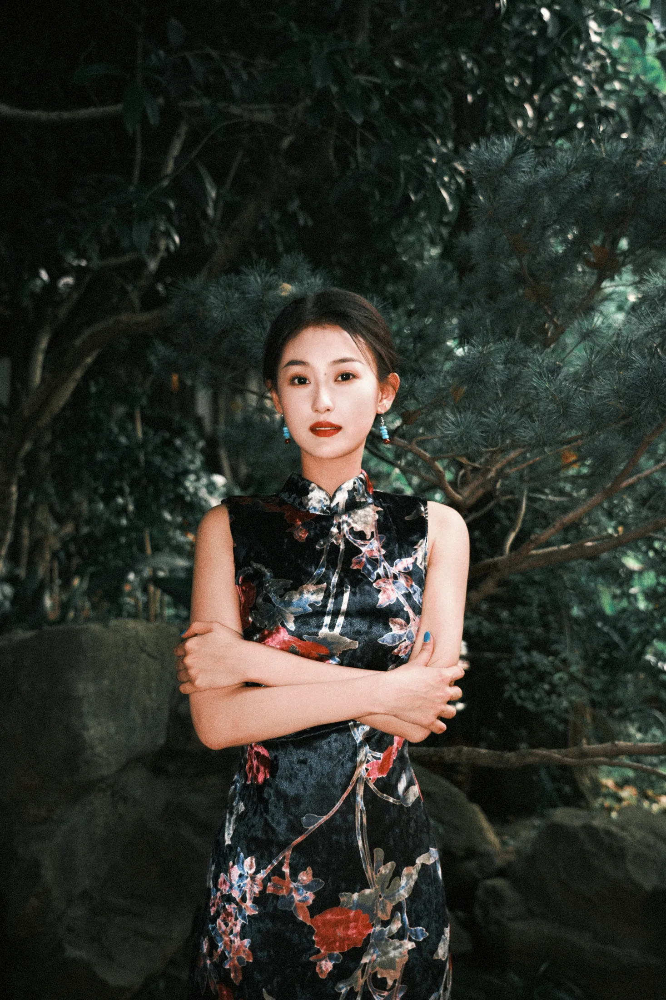
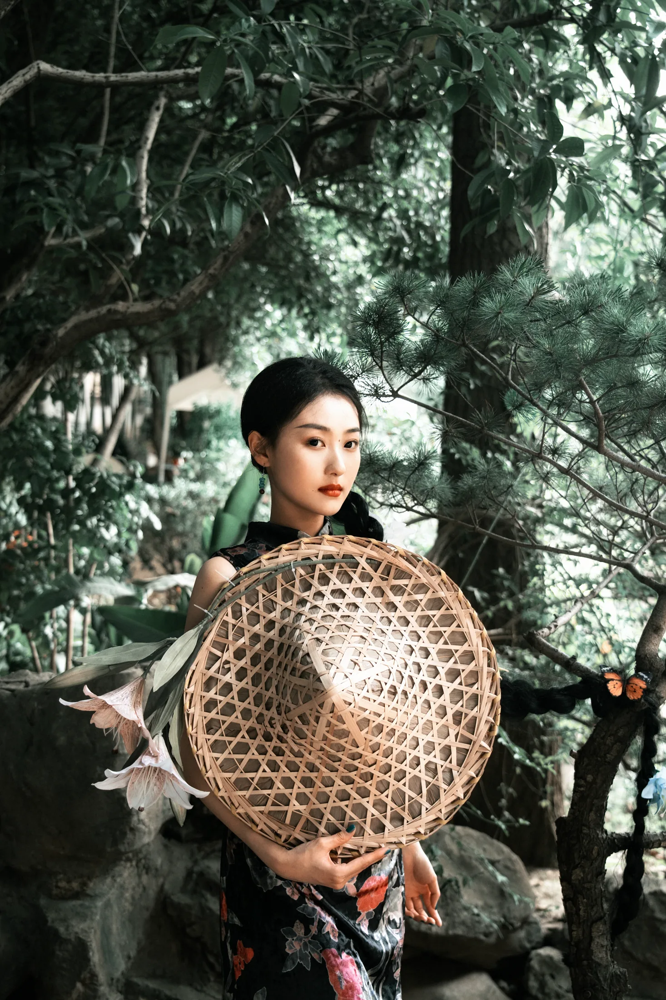
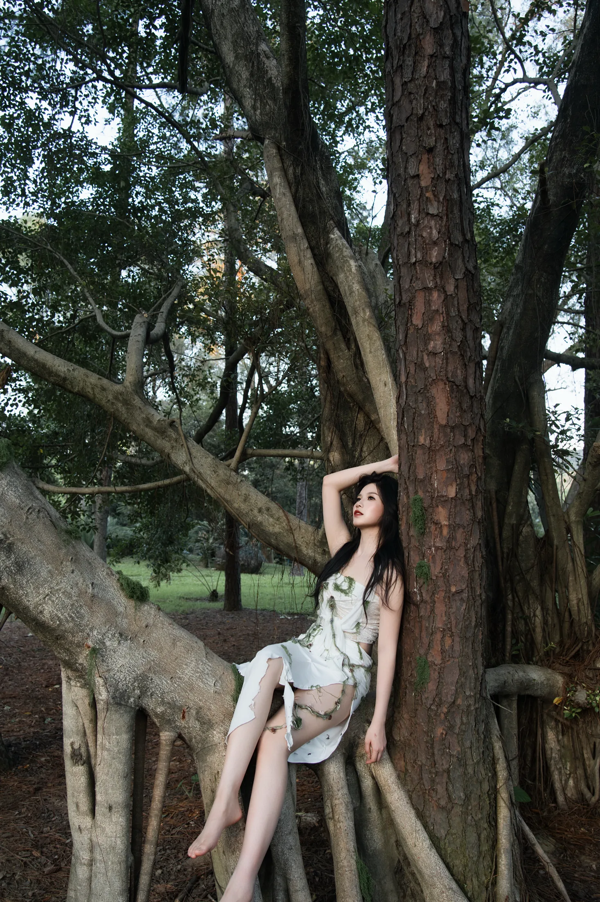
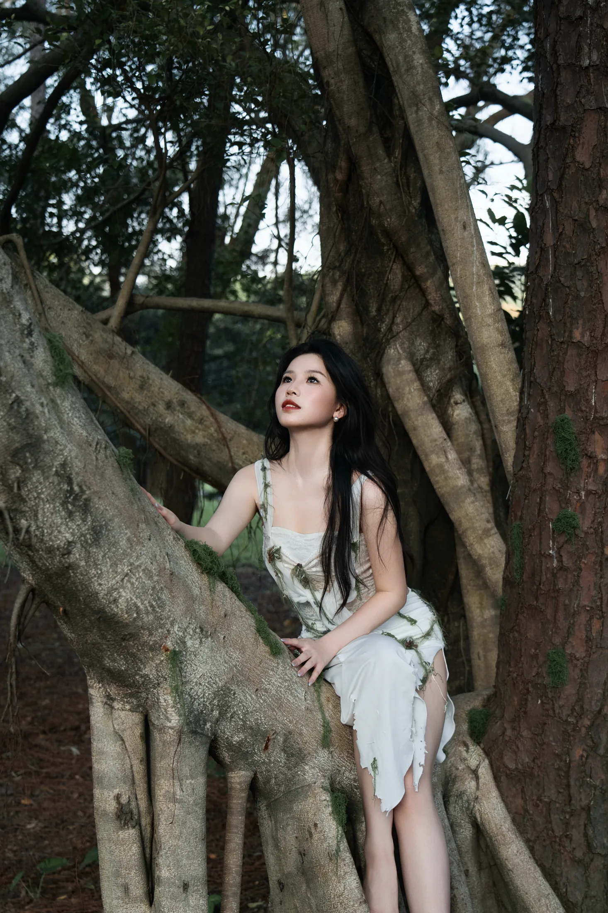
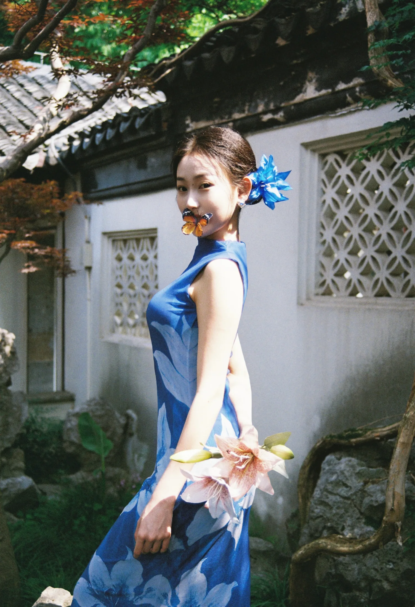
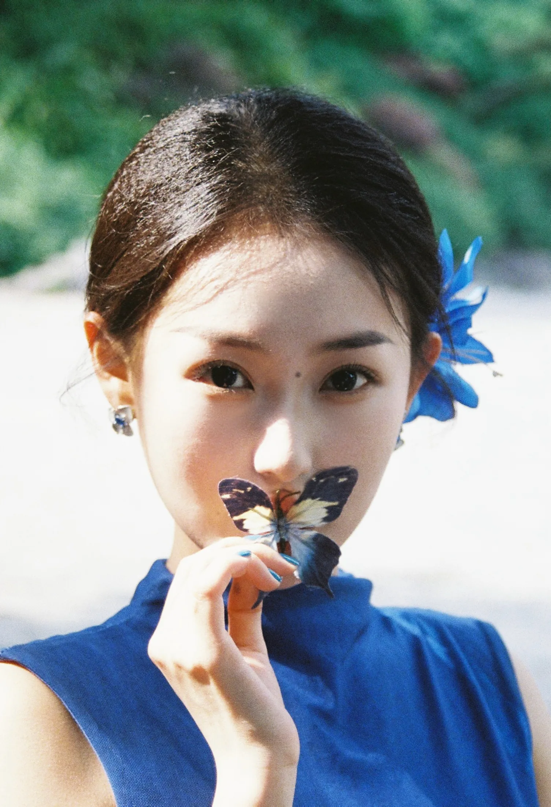
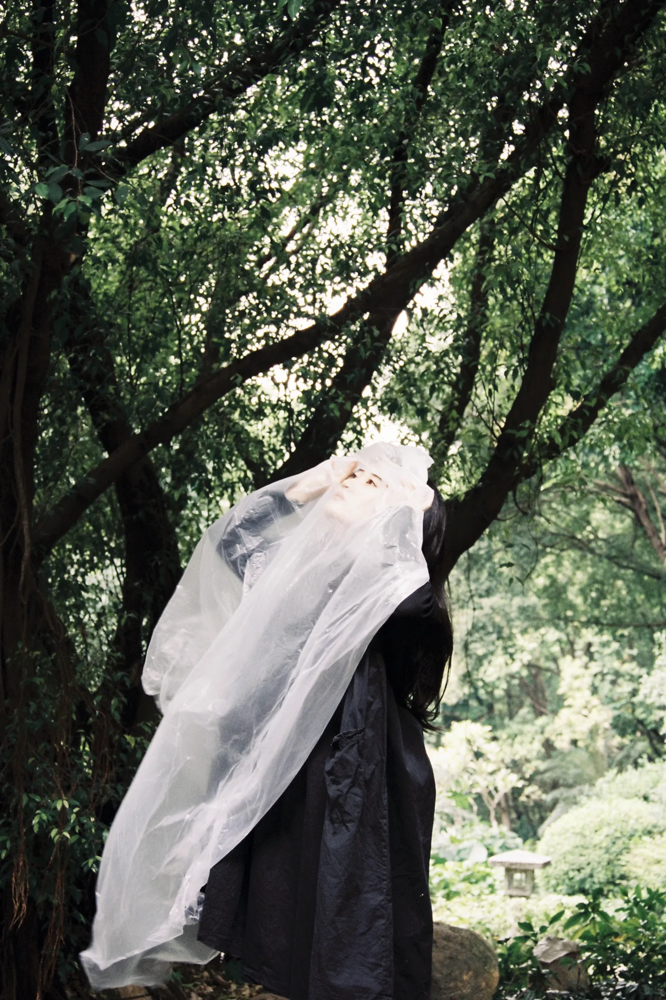
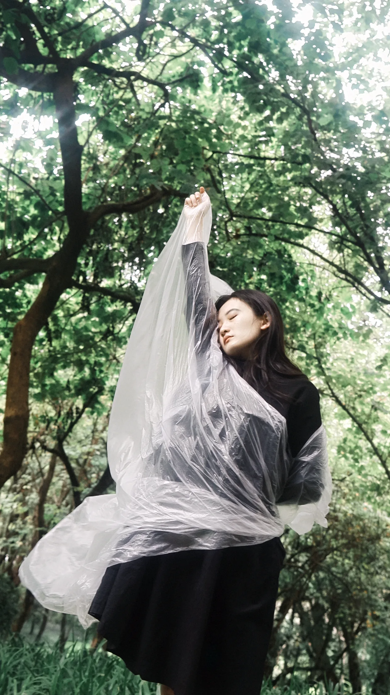
Concept
从女性与自然的关系出发，思考个体如何在自然中重新感知身体与自我。
人物由庭院步入森林，逐渐摆脱外界赋予的角色，与树木、根系、风、光和植物建立更亲密的联系。
蝴蝶、轻纱、树根与镜面反复出现：它们回应身体经验，也记录内心状态的转变。
将东方园林美学中的留白、层次与自然观念融入当代摄影语言，让自然与人物共同构成影像叙事。
Exhibition Info